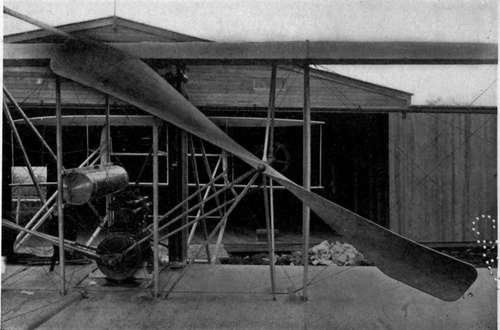

Chapter IX. The New Science Of The Air
Description
This section is from the book "The New Art Of Flying", by Waldemar Kaempffert. Also available from Amazon: The New Art of Flying.
Chapter IX. The New Science Of The Air
So far as the earth is concerned, the sun is very much in the position of a man who practically utilises only a single cent out of a fortune of $22,000,000 and throws the rest away; for only 1/2,200,000,000 of the sun's heat ever reaches us. That pittance must be conserved, for which reason the earth is wrapped in a wonderful, transparent, and invisible garment which we call the air and which serves the very utilitarian purpose of keeping the world warm. Of the thickness of that wrapping we know but little. Perhaps it may extend outward from the earth for a distance of two or three hundred miles if we may judge from observations of meteor trains and auroras. Some idea of its depth may be gained by stating that if this planet were a globe only six feet in diameter, the air would be not much more than two inches thick. The texture of this gaseous garment and its peculiar relation to the sun have but recently been made the subject of rigorous investigation; for only in our own day has it been perceived that the vagaries of the weather may thus be satisfactorily explained and a system of weather forecasting devised more far-reaching and accurate than that which at present serves us.
One step in this investigation is the study of the physical attributes with which the air is endowed. The air has a weight which fluctuates from day to day and from hour to hour. It is sometimes warm and sometimes cold, sometimes moist and sometimes dry, sometimes calm and sometimes turbulent. All this our senses taught us long ago. But so crude are our senses that they can never tell us exactly how much it weighs at a given moment, how wet it is, how fast it moves, and how warm or cold it is. The physicist has, therefore, been constrained to devise subtler senses. He has given us a remarkable balance which is known to every one as a barometer and which weighs the air to a nicety; a delicate measurer of moisture, which he calls a hygrometer; a motion or wind recorder, known as an anemometer; and a heat-measurer in the form of the familiar thermometer. These responsive artificial senses have been used on the surface of the earth for many years, and by their means are gathered the main facts upon the basis of which the weather bureaus at home and abroad venture to predict the morrow's weather.
Because we have learned practically all there is to learn of the lower air and because weather forecasters have in the past ignored the upper levels of the air, levels which unquestionably have their influence on the weather, it was felt that some effort must be made to measure the thickness of the earth's invisible wrapping and to determine the weight, temperature, velocity, and moisture of the air miles above us.
In order to accomplish this task it was essential to invent an artificial arm which would grasp the sensitive barometer, thermometer, hygrometer, and anemometer devised by the physicist and hold them for us in the upper reaches of the air. The problem of providing such an arm was not easily solved. In fact, it is not completely solved even now, for which reason the hand of science has not yet succeeded in touching the uppermost layer of air the hem of the earth's mysterious robe. Meteorological observations with manned balloons have been made sporadically for much more than a century. An ascent was made by Jeffries, at London, in 1784, with a remarkably complete equipment of meteorological apparatus. Hardly a year passes but that experiment is repeated. Because a human being cannot breathe the tenuous air of great altitudes and live, the experiment has sometimes proved fatal. To overcome the difficulty, the meteorologist has torn a leaf from the book of the marine biologist, who plumbs the deep sea with scientific instruments and brings to the surface living facts for subsequent study. The meteorologist, accordingly, now sounds the air, as if it were a great invisible ocean at the bottom of which we live.
The artificial arm that reaches upward has assumed the form either of a kite or of a small unmanned balloon, and thus it has become possible to elevate to great heights the mechanical senses that weigh the air, feel its moisture and its heat, and note its motion. The men to whom most of the credit is due for all that has been gleaned in the last few years are Teis-serenc de Bort, of France, Prof. A. Lawrence Rotch, of the United States, and Dr. Richard Assmann, of Germany.
Fig. 43. A Wright propeller. Wright propellers turn at comparatively low speeds (400 revolutions a minute). They have an estimated efficiency of 76 per cent.
Photograph by Tresslar.
During the past decade the work has been taken up by the official meteorological services of the world, and is now carried on systematically under the direction of an international commission, appointed by the International Meteorological Committee. This commission has a permanent office at Strassburg, and holds triennial meetings in different cities, in which meteorologists from all civilised countries participate. The next meeting will take place at Vienna, in 1912.
In the United States, in addition to the admirable work done at Blue Hill, by Professor Rotch and his staff, regular observations of the upper air are carried on by the Weather Bureau at the Mt. Weather Observatory, near Blue-mont, Va., and the data obtained are telegraphed daily to Washington, for the information of the official weather-forecasters.
In Europe there are now several institutions devoted entirely to this branch of investigations. The most elaborate of these is the Royal Prussian Aeronautical Observatory at Linden-berg, not far from Berlin, and Germany has observatories of similar character, on a somewhat smaller scale, at Hamburg, Aachen, Friedrichs-hafen, and elsewhere. The observatory at Friedrichshafen is unique in possessing a small steamboat which plies the waters of Lake Constance and is especially equipped for sending up kites and balloons. Other " aerological observatories/' as the institutions of this character are now called, are situated at Trappes, near Paris; Pavia, Italy; and Pavlovsk, Russia; while in the British Isles the chief centre for aerological observations is the Glossop Moor Observatory, near Manchester. Similar observatories exist in subtropical regions, in Egypt and India. A very important station is located on the peak of Teneriffe, in the Canary Islands. In the southern hemisphere upper-air researches are now regularly carried on at two places, viz., in Samoa; and at Cordoba, in the Argentine Republic. In addition to these fixed observatories, mention should be made of the aerological work now frequently carried out by exploring expeditions, especially in the polar regions.
Continue to: